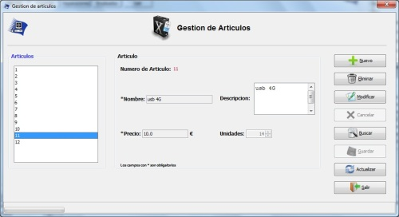

Gestion de Articulos
Gestion de Articulos
Desde el menu gestion de Articulos se gestionaran los articulos del sistema
Se podra dar de alta,baja,editar y buscar articulos. Cuenta tambien con la opcion de guardar y deshacer los cambies hechos en los articulos
Imagen del menu Gestion de Articulos.

Las opciones del menu gestion de articulos son:
- Nuevo : para dar de alta un nuevo articulo
- Eliminar : Para eliminar un articulo.
- Modificar : Para editar un articulo
- Cancelar : este boton se habilita despues de un alta o una modificacion y sireve para cancelar un alta o modificacion
- Buscar: Para buscar un articulo por su numero de articulo
- Guardar : para guardar los cambios realizados
- Actualizar : deshace todos los cambios sin guardar y actualiza la lista de articulos con los datos de la base de datos
- Salir : Cierra el menu de gestion de articulos